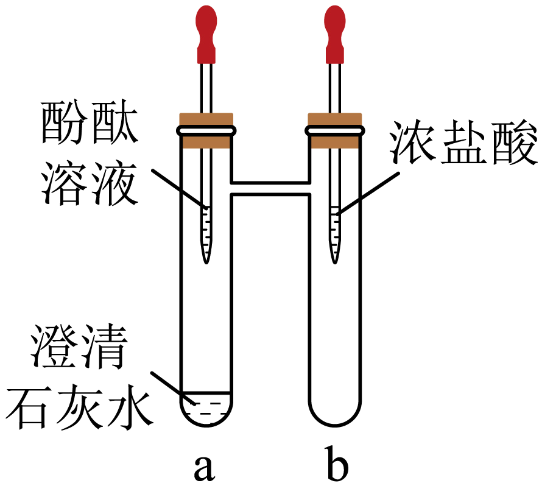
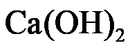

2023年北京中考化学 第36题 解析
36. 用下图装置进行实验。

（1）将无色酚酞溶液滴入a中，溶液颜色变为_____；再将浓盐酸滴入b中，一段时间后，a中溶液褪色，说明

与发生了反应，化学方程式为_____。（2）该实验说明浓盐酸的性质有酸性和_____。
【答案】（1） ①. 红色 ②. Ca(OH)2+2HCl=CaCl2+2H2O
（2）挥发性
【解析】
【小问1详解】
无色酚酞溶液遇碱性溶液变红，将无色酚酞溶液滴入a中，由于澄清石灰水呈碱性，可观察到溶液颜色变为红色；再将浓盐酸滴入b中，一段时间后，a中溶液褪色，说明与发生了反应，即氢氧化钙与盐酸反应生成氯化钙和水，反应的化学方程式为Ca(OH)2+2HCl=CaCl2+2H2O，故填：红色；Ca(OH)2+2HCl=CaCl2+2H2O；
【小问2详解】
将浓盐酸滴入b中，一段时间后，a中溶液褪色，说明浓盐酸有酸性，浓盐酸能从b运动a中，还能说明浓盐酸具有挥发性，故填：挥发性。